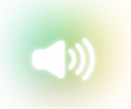

Hello, I'm PearPhrase
Start
Gather the information from the website
 iRead
Hear what the website says
iSummarize
Get a summary of the text within the website
iRecommend
Display related and similar websites and articles
Most Recent
Get the most recent articles and updates.
Most Popular
Get the highest ranked articles and webpages.
Recommended Articles and Webpages:
Summary:
Simpler
Get a simpler, easy-to-understand summary.
In-Depth
Get a more detailed and intellectual summary.